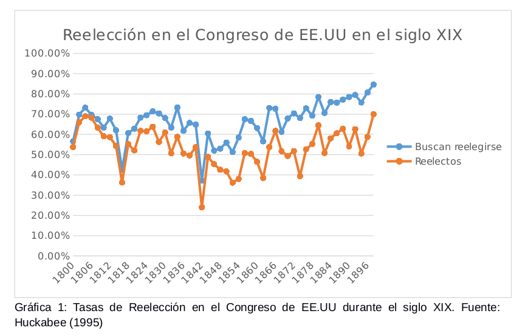

Antecedentes de la reelección legislativa en México
por
Javier Cote
Valeria Guerrero y
Teresa Ruiz
La reforma electoral de 2013 abolió la prohibición de reelección legislativa consecutiva en vigor desde 1933. Los analistas que miraron el suceso con algún detenimiento son escépticos acerca del alcance de la reforma. Vieron con preocupación la "cláusula partidista" de la reelección y han dicho que "poco nos moveremos del status quo, pues seguiremos con representantes que probablemente primero respondan a los intereses de su partido político y no al juicio de los ciudadanos." (Merino, 2013). Independiente de esto, también es posible que los efectos sean mínimos por el desinterés de los legisladores por reelegirse. Abordamos ambos argumentos en esta entrada.
1 La ambición política
La perspectiva sobre los efectos mínimos de la reelección legislativa en México tras la reforma política amerita una discusión más amplia en donde interviene la literatura sobre la ambición de los legisladores, el rol de las instituciones y el antecedente de la reelección en nuestro país.
Para conocer el funcionamiento y aspiraciones de los partidos políticos debemos remontarnos a la literatura. Un partido político puede entenderse como una organización que nace con fines de resolver problemas de acción colectiva, mediante legislación, y representar a una minoría (Aldrich, 1995). Igualmente podría entenderse como un equipo de personas quienes buscan obtener cargos públicos con el objetivo de disfrutar de los ingresos, prestigio y poder que conlleva administrar el Gobierno (Downs, 1957). El partido (o coalición) ganador ejerce el control sobre las acciones de Gobierno hasta la siguiente elección. Es deseable entender que los agentes se comportan racionalmente en todo momento; esto decir, su actuación es conforme a los objetivos que desean alcanzarse (Downs, 1957).
Dichos objetivos para los partidos políticos son sus ambiciones políticas.
En su libro clásico sobre ambición política, Schlesinger (1967) distingue dos tipos de legisladores. Están, por un lado. los que tienen ambición estática, deseando permanecer en el cargo actual indefinidamente. Lograrlo exige reelegirse una y otra vez en las elecciones periódicas. Por otro lado, están los legisladores con ambición progresiva, que usan el puesto actual como trampolín para contender por otro cargo político. Schlesinger espera que uno y otro tipos lleven a cabo acciones sistemáticamente diferentes en aras de cultivar sus carreras políticas.
2 Ambición legislativa estática
En México, durante los años de enfrentamiento entre facciones revolucionarias por el triunfo de un proyecto nacional se desarrollaron prácticas de reelección legislativa en la Cámara de Diputados en el periodo de 1917-1933, el cual abarcó nueve legislaturas.
Godoy (2014) estudió las tasas de reelección durante este periodo. El cuadro 1 reporta sus hallazgos. A pesar de ser relativamente bajas, detectó que la reelección iba en aumento acelerado. En la legislatura XXVII, la primera electa tras la promulgación de la Constitución carrancista y que corrió de 1917 a 1918, la tasa de reelección fue del 18%. Poco menos de uno de cada cinco constituyentes de Querétaro se reeligieron como diputados federales. Pero para la legislatura XXXIV, electa en 1930, se registró la tasa más elevada de la serie, 42%. En doce años se había más que duplicado la tasa de reelección legislativa en México.
| Legislatura | Número de diputados | Diputados reelectos | Tasa de reelección |
|---|---|---|---|
| Congreso Constituyente | 222 | --- | --- |
| XXVII (1917-1918) | 256 | 45 | 18% |
| XXVIII (1918-1920) | 253 | 64 | 25% |
| XXIX (1920-1922) | 274 | 42 | 15% |
| XXX (1922-1924) | 262 | 69 | 26% |
| XXXI (1924-1926) | 266 | 67 | 25% |
| XXXII (1926-1928) | 276 | 82 | 30% |
| XXXIII (1928-1930) | 281 | 111 | 40% |
| XXXIV (1930-1932) | 153 | 65 | 42% |
| XXXV (1932-1934) | 172 | 47 | 27% |
| XXXVI (1934-1937) | 171 | 0 | 0% |
Cuadro 1: reelección en la Cámara de Diputados 1917-1934. El número de diputados de cada Legislatura varía por distintas razones, entre ellas las condiciones militares en algunos distritos y el cambio más significativo de la Legislatura XXXIII a la XXXIV debido a una reforma impulsada por el presidente Calles para aumentar el número de habitantes representados por distrito. Fuente: Godoy (2014).
Estas bajas tasas de reelección en México no fueron la excepción, ya que la institucionalización de la reelección es lenta para cualquier país que la adopta por primera vez dentro de su marco institucional. Ejemplo de ello es el caso de Estados Unidos, cuyas tasas rondaron entre el 40 y 50% a lo largo del siglo XIX y para la primera mitad del siglo XX ya contaba con tasas de hasta 86% (Godoy, 2014), como lo muestran la Gráfica 1 y 2.
[[]
[[]
Lo que estos datos demuestran, es que la ambición estática no estuvo totalmente ausente entre los legisladores federales mexicanos de los años 1920. La Cámara se conformaba de un sector, relativamente importante, interesado en prolongar su periodo legislativo. Y entre los incentivos que tenían para querer esto Godoy encontró que la experiencia legislativa influía para tener puestos de mayor envergadura al interior de la Cámara. A los reelectos se les reconocía su experiencia previa y se les premiaba con puestos de mayor importancia como presidentes y secretarios de las distintas comisiones (Godoy, 2014)
El mecanismo de reelección de la época permitía la libertad de acción, pues no contemplaba la renominación por el mismo partido de la actual "cláusula" –– la ley incluso prohibía que cualquier tipo de órgano partidista nominara candidatos desde la cabeza de la organización y únicamente exigía el registro de candidatos. Con una reglamentación sencilla, la Constitución indicaba que los requisitos de los partidos y candidatos eran los siguientes:
- Que hayan sido fundados por una asamblea constitutiva de cien ciudadanos por lo menos;
- que la asamblea haya elegido a una junta que dirija los trabajos del partido y que tengan la representación política de éste;
- que la misma asamblea haya aprobado un programa político y uno de gobierno;
- que no lleve denominación religiosa ni se forme exclusivamente a favor de individuos de determinada raza o creencia;
- que la junta directiva publique por lo menos ocho números de un periódico de propaganda durante los dos meses anteriores a las elecciones; y
- que registre su candidatura durante los plazos fijados por la Ley.
Fuente: Godoy (2014).
Así, los candidatos solo debían registrarse y trabajar en cultivar el voto del electorado en su localidad, el cual obtenían concentrando sus propuestas en los intereses particulares de sus distritos. A pesar de que México no era una democracia en la época, estos diputados se ajustaban bien al modelo de legislador de Mayhew (1974) y de Cain, Ferejohn y Fiorina (1987) [ CITATION Bru87 \l 3082 ]. Fomentaron la formación de caciquismos locales, lo que les daba cierto reconocimiento entre la gente de sus distritos, otro incentivo, de acuerdo con Godoy, para buscar la reelección y trabajar por ella, especialmente si tenían en mente una carrera a largo plazo tanto legislativa como extra legislativa.
En resumen, en promedio se reeligieron entre un tercio y un cuarto de los integrantes de cada legislatura del periodo. La tasa iba en franco ascenso, hasta que intervino la reforma que prohibió la reelección legislativa consecutiva. Conviene analizar lo ocurrido en otras democracias y marcos institucionales para evaluar la magnitud del segmento con ambición estática.
3 Ambición legislativa progresiva
Al igual que el resto de las democracias del continente, exceptuando Costa Rica, Brasil permite la reelección legislativa consecutiva. Su Cámara de Diputados tiene una tasa de rotación alrededor del 50%, es decir que, la mitad de los ocupantes son reemplazados por legisladores novatos en cada periodo legislativo (Samuels 2000).
Si los legisladores son individuos que desean conformar su carrera política y aspirar a convertir elementos de su agenda en legislación en un proyecto de continuidad; ¿acaso no persiguen la reelección o son incapaces de lograr la reelección? Samuels explica que la respuesta se encuentra en el marco institucional y la ambición de los legisladores.
Tanto leyes electorales como las listas descentralizadas del partido son figuras que incentivan la reelección legislativa; sin embargo, la evidencia muestra que pocos legisladores son los interesados en forjar una carrera política estática. La mayoría de los diputados buscan formar una carrera con ambición extra legislativa y ven su periodo en la Cámara de Diputados solo como un primer escalón dentro de la carrera política (Samuels, 2000).
Los legisladores tienen una percepción de cargos públicos fuera de la Cámara más atractiva. Ejemplos de dichos cargos son Gobernador, Vice-Gobernador, Senador o bien ministro de alguna secretaría federal.
En contraste con su diputación, los políticos brasileños a nivel subnacional tienen mayores recursos aprovechados por una política fiscal descentralizada que los ayuda a perseguir sus intereses. Igualmente, alcaldes y ministros de secretaría ejercen control de nombramiento a diversos cargos públicos y acceso a fondos federales. Así las candidaturas por la reelección legislativa son débiles frente al plano subnacional (Samuels 2000). Entonces, ¿cuáles son los efectos que sufre el representado ante una débil figura legislativa y con ambición progresiva?
La poca profesionalización de las carreras política provoca que cargos de alta especialización como son las comisiones se encuentren ocupadas por legisladores novatos con carente expertise y conocimiento del tema; poniendo en detrimento la política pública dirigida por dicha comisión. Igualmente, en el caso brasileño, 40% de los ocupantes demuestra, a través de acciones, su ambición extra congresional. 20% ha tomado o extendido su tiempo de licencia y otro 20% ha servido como funcionario interino o se ha nominado para la candidatura de alguna municipalidad. Esto nos demuestra una débil participación legislativa y que los legisladores cambian su cargo de elección popular con fines de perseguir sus ambiciones progresivas (Samuels 2000).
De acuerdo con Godoy, en el caso mexicano de 1917 a 1933 la ambición legislativa progresiva también estuvo presente. El curul legislativo era un puesto menor que otros cargos a nivel regional; en la escala de Smith, ser diputado estaba en la novena posición de doce. Por lo tanto, debido a lo poco valía el curul, los legisladores que buscaban una carrera política a largo plazo utilizaban su puesto en la Cámara como un trampolín para avanzar en la escala hacia una carrera extra-legislativa (Godoy 2014).
| Rango | Cargo |
|---|---|
| 1 | Jefe de la Familia Revolucionaria |
| 2 | Presidente de México |
| 3 | Miembros del círculo interno y líderes de facciones de la Familia Revolucionaria. |
| 4 | Miembros del gabinete, incluidos el regente del Distrito Federal; el jefe del Estado Mayor Presidencial, |
| el secretario particular del presidente; los directores de las grandes empresas públicas y los directores | |
| de organismos particulares, comisiones, bancos y consejos. | |
| 5 | Gobernadores de los estados grandes y de los territorios federales, embajadores en puesto de prestigio, |
| hombres regionales fuertes y líderes de ambas Cámaras del Congreso; comandantes de zonas militares y el | |
| presidente del partido oficial. | |
| 6 | Senadores, jueces de la Suprema Corte, subsecretarios y directores adjuntos de grandes empresas públicas, |
| comisiones, consejos y dependencias; el secretario general y los líderes de los principales partidos de | |
| oposición; y los secretarios generales de la CTM, CNC y FSTSE. | |
| 7 | Directores y administradores de empresas públicas medias, directores de juntas federales secundarias, |
| comisiones y organismos; gobernadores de estados medianos y pequeños; embajadores, ministros y cónsules | |
| generales. | |
| 8 | Presidentes municipales de ciudades grandes. |
| 9 | Diputados Federales, jueces federales; el presidente y los miembros de los consejos ejecutivos regionales |
| del partido oficial; líderes de los partidos menores de oposición; directores de bancos de crédito obrero, | |
| agrario y federal a nivel estatal. | |
| 10 | Diputados estatales, jueces estatales, oficiales de distrito del partido oficial, funcionarios federales |
| en los estados y patrones (caciques) locales. | |
| 11 | Presidentes municipales de ciudades medianas y pequeñas, comandantes militares locales y funcionarios |
| estatales y federales a nivel local. | |
| 12 | Funcionarios locales del partido y consejeros municipales. |
Cuadro 3: Posiciones de cargos públicos de Smith con ordenamiento de Brandenburg. Fuente: tomado de Godoy (2014).
Considerando que los legisladores buscaban establecer una carrera a largo plazo, sin importar si esta era al interior de la cámara o no, es evidente que el curul legislativo formaba parte estas carreras políticas y que la reelección era un mecanismo para fomentar su perdurabilidad. Pues, incluso cuando sus ambiciones apuntaban a puestos más altos que esté, permanecer como ocupantes les permitía tejer redes con otros personajes políticos, cultivar su voto personal a nivel local y promover el reconocimiento de su nombre en la política nacional, herramientas que les ayudarían a escalar con más facilidad en la política nacional de la época.
4 Anexo: Reelección en el Congreso de EE.UU.
4.1 Siglo XIX
| Ocupantes que | Derrotados en | Porcentaje | |
|---|---|---|---|
| Año | buscaron reelegirse | la elección general | de reelectos |
| 1800 | 60 | 3 | 54 |
| 1802 | 74 | 4 | 66 |
| 1804 | 104 | 5 | 69 |
| 1806 | 99 | 2 | 68 |
| 1808 | 96 | 6 | 63 |
| 1810 | 90 | 6 | 59 |
| 1812 | 97 | 13 | 59 |
| 1814 | 113 | 15 | 54 |
| 1816 | 78 | 11 | 36 |
| 1818 | 111 | 7 | 55 |
| 1820 | 117 | 16 | 52 |
| 1822 | 127 | 12 | 62 |
| 1824 | 148 | 17 | 62 |
| 1826 | 152 | 16 | 64 |
| 1828 | 150 | 28 | 56 |
| 1830 | 145 | 15 | 61 |
| 1832 | 135 | 25 | 51 |
| 1834 | 176 | 33 | 59 |
| 1836 | 149 | 26 | 51 |
| 1838 | 159 | 38 | 50 |
| 1840 | 157 | 25 | 54 |
| 1842 | 90 | 31 | 24 |
| 1844 | 135 | 23 | 49 |
| 1846 | 116 | 15 | 45 |
| 1848 | 122 | 21 | 43 |
| 1850 | 130 | 29 | 42 |
| 1852 | 119 | 30 | 36 |
| 1854 | 137 | 47 | 38 |
| 1856 | 158 | 37 | 51 |
| 1858 | 156 | 34 | 50 |
| 1860 | 110 | 22 | 47 |
| 1862 | 103 | 29 | 39 |
| 1864 | 133 | 32 | 54 |
| 1866 | 133 | 12 | 62 |
| 1868 | 146 | 19 | 52 |
| 1870 | 165 | 36 | 49 |
| 1872 | 171 | 37 | 52 |
| 1874 | 199 | 71 | 39 |
| 1876 | 213 | 47 | 53 |
| 1878 | 203 | 32 | 55 |
| 1880 | 230 | 30 | 65 |
| 1882 | 207 | 43 | 51 |
| 1884 | 247 | 46 | 58 |
| 1886 | 246 | 28 | 61 |
| 1888 | 251 | 37 | 63 |
| 1890 | 260 | 63 | 54 |
| 1892 | 264 | 42 | 63 |
| 1894 | 270 | 71 | 51 |
| 1896 | 288 | 61 | 59 |
| 1898 | 302 | 38 | 70 |
| 1900 | 303 | 20 | 75 |
Fuente: Huckabee (1995)
4.2 Segunda mitad del siglo XX
| Ocupantes que | Derrotados en | Derrotados en la | Porcentaje | |
|---|---|---|---|---|
| Año | buscaron reelegirse | las primarias | elección general | de reelectos |
| 1946 | 398 | 18 | 52 | 82 |
| 1948 | 400 | 15 | 68 | 79 |
| 1950 | 400 | 6 | 32 | 91 |
| 1952 | 389 | 9 | 26 | 91 |
| 1954 | 407 | 6 | 22 | 93 |
| 1956 | 411 | 6 | 16 | 95 |
| 1958 | 396 | 3 | 37 | 90 |
| 1960 | 405 | 5 | 25 | 93 |
| 1962 | 402 | 12 | 22 | 92 |
| 1964 | 397 | 8 | 45 | 87 |
| 1966 | 411 | 8 | 41 | 88 |
| 1968 | 409 | 4 | 9 | 97 |
| 1970 | 401 | 10 | 12 | 95 |
| 1972 | 390 | 12 | 13 | 94 |
| 1974 | 391 | 8 | 40 | 88 |
| 1976 | 384 | 3 | 13 | 96 |
| 1978 | 382 | 5 | 19 | 94 |
| 1980 | 398 | 6 | 31 | 91 |
Fuente: Jacobson (1997)
5 Bibliografía
- Aldrich, J. (1995). Why parties? The University of Chicago Press.
- Cain, B., J. Ferejohn y M. Fiorina. (1987). The Personal Vote: Constituency Service and Electoral Independence . Harvard University Press.
- Downs, A. (1957). An Economic Theory of Political Action in a Democracy. The Journal of Political Economy, 135-150.
- Godoy, L. F. (2014). Reelección en la Cámara de Diputados, 1917-1933. Federalismo y Ambición Política. Ciudad de México, México: Instituto Tecnológico Autónomo de México.
- Huckabee, D. C. (1995). Reelection Rates of House of Incumbents. Washington D. C., Estados Unidos: Congressional Research Service, Library of Congress.
- Jacobson, G. C. (1997). The Politics of Congressional Elections. San Diego, California, Estados Unidos: Longman.
- Merino, José (5 de dic.2013). Salir de dudas: Por qué la reelección sirve y por qué no servirá en México. Obtenido de Animal Político.
- Mayhew, D. R. (1974). Congress: The Electoral Connection. New Haven, Connecticut, Estados Unidos: Yale University Press.
- Samuels, D. (2000). Ambition and Competition: Explaining Legislative Turnover in Brazil. Washington University, 481-497.
- Schlesinger, A. (1967). Congress and the Presidency: Their Role in Modern Times. AEI Press.